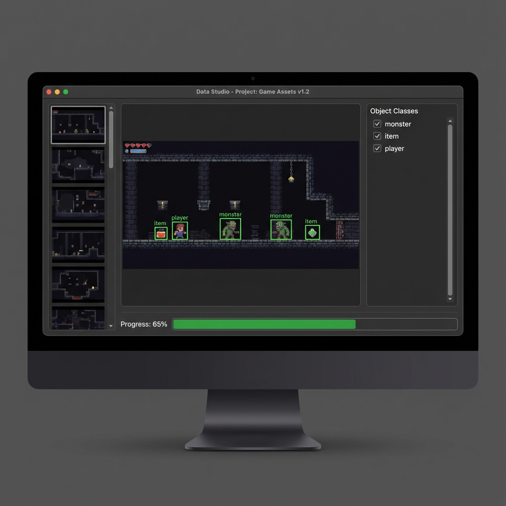
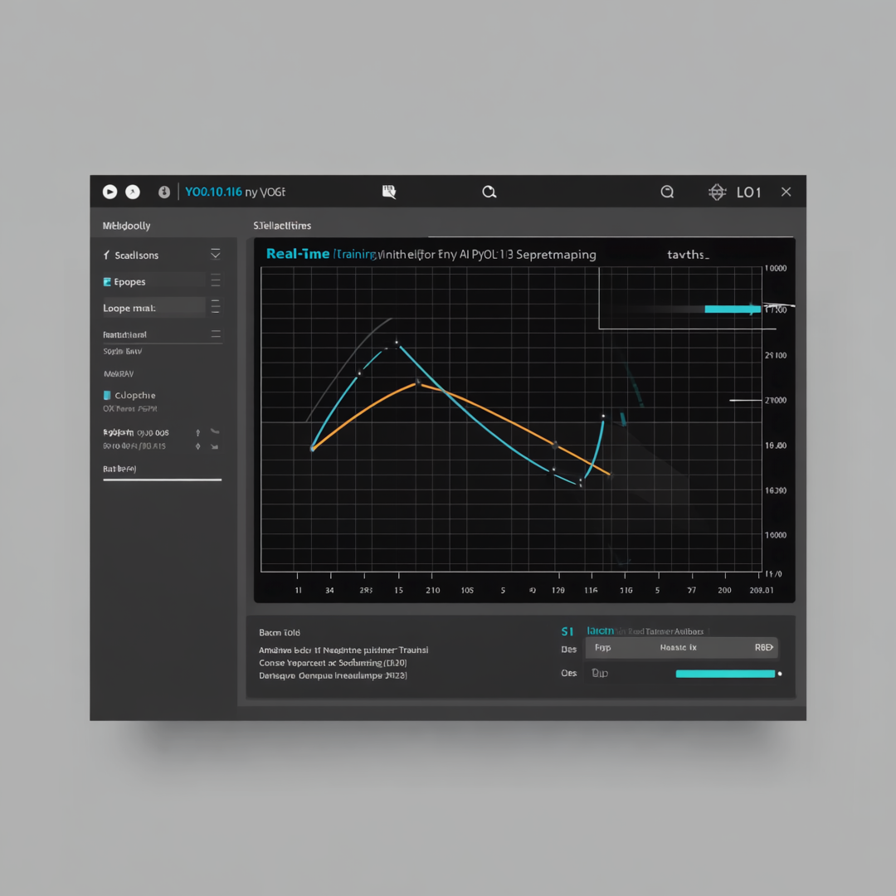
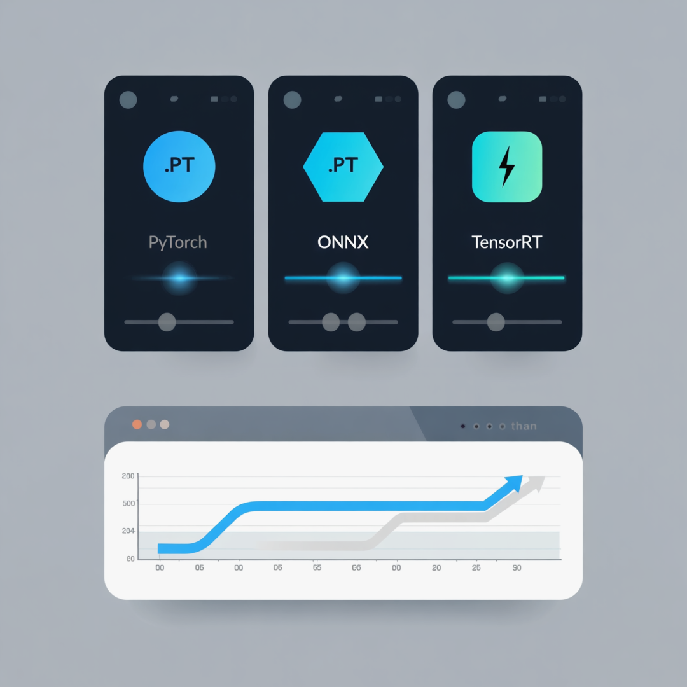

SugarMacro 핵심 기능
학습된 AI 모델을 활용한 지능형 게임 자동화


Major Update
Latest AI Model
Complete Pipeline
Detection Rate
게임 객체 학습을 위한 올인원 AI 도구

게임 화면 캡처, 자동 라벨링, 데이터 증강을 한 곳에서. AI가 바운딩 박스를 자동으로 생성합니다.

YOLO11 모델을 GUI에서 간편하게 학습. 실시간 Loss/mAP 그래프로 학습 상태를 모니터링하세요.

학습된 모델을 ONNX, TensorRT로 변환하여 추론 속도를 극대화. 원클릭 내보내기 지원.
학습된 AI 모델을 활용한 지능형 게임 자동화